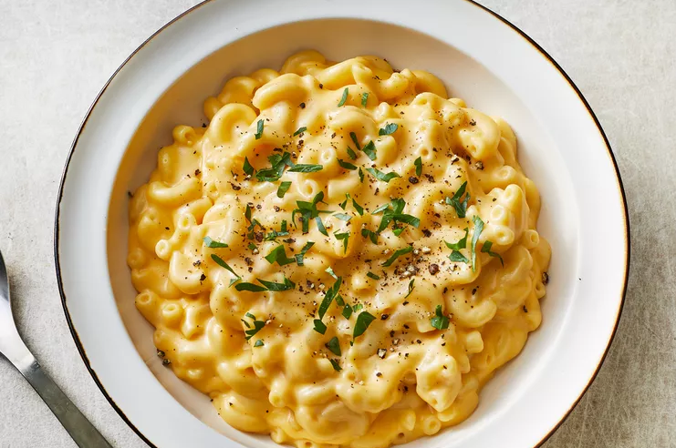

Macaroni and Cheese

Description
Looking for a homemade alternative to boxed mac and cheese that's just as quick and easy? This stovetop mac and cheese uses staple ingredients and comes together in just 25 minutes. You'll want to bookmark this recipe for busy weeknights. The good news is, it's so simple that once you make it a couple times, you'll likely have it memorized.
Ingredients
- 1 (8 ounce) elbow macaroni
- ¼ cup butter
- ¼ cup all-purpose flour
- ½ teaspoon salt
- ground black pepper to taste
- 2 cups milk
- 2 cups shredded Cheddar cheese
Steps
- Boil Macaroni: Bring a pot of water to a boil. Cook elbow macaroni until al dente, about 8 minutes.
- Make a Roux: To make the roux, start by melting butter in a saucepan over medium heat. Add flour, salt, and pepper and stir until smooth. Slowly pour in milk and stir until the mixture is smooth and bubbling. Be careful to not let the milk burn.
- Add Cheese and Macaroni: Finally, the most crucial step: Add cheese! Slowly stir in Cheddar cheese until smooth and melted. We recommend you grate your own cheese because pre-shredded cheese won't incorporate into the mixture as well as block cheese. Once the macaroni is finished cooking, drain and stir into cheese sauce until coated.